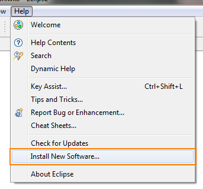
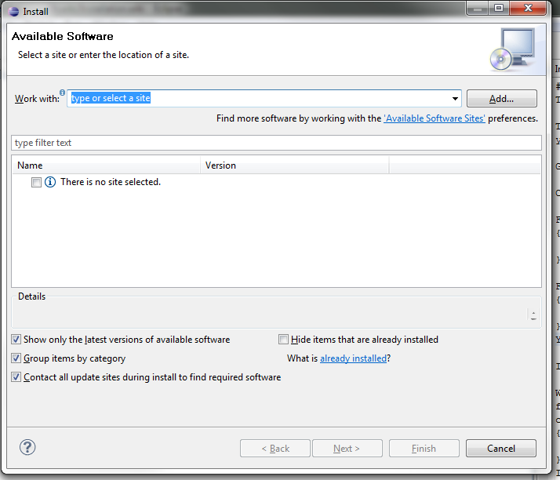
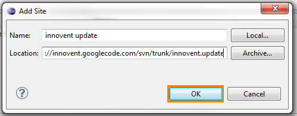
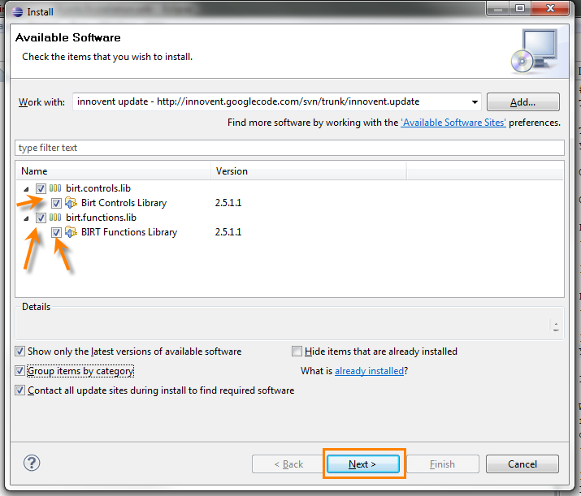
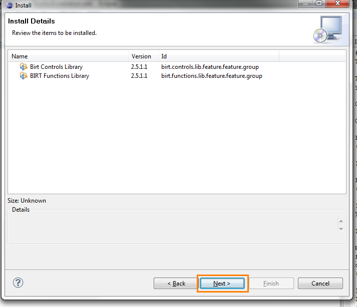
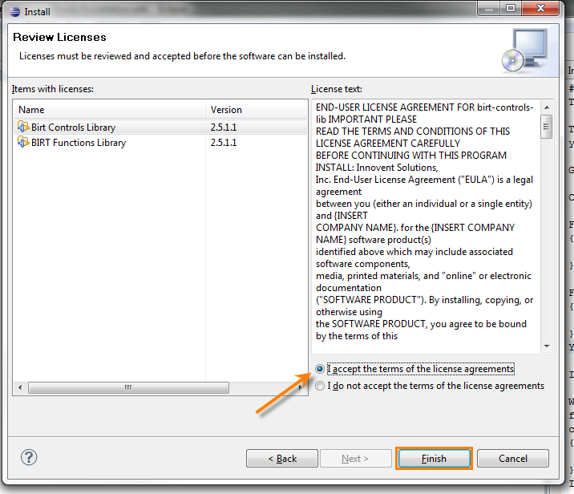
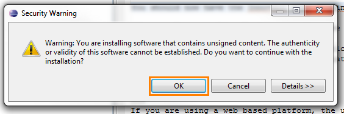
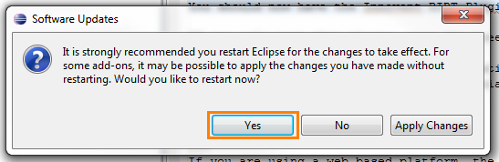

Go to the Help Install New Software menu choice

The update manager dialog comes up. Click the Add button.

The Add Site dialog comes up. You want to give the site a name such as Innovent Update and paste in the URL.
http:/steveschafer-innovent.github.io//2.5.2

Check the boxes for the features you want. You can un-check the Group Items by Category if you would prefer to see a flat display of the options. When you have selected your options, click Next.

The dependencies will be analyzed and you will be given a screen that lets you know what you are installing, click Next.

You need to accept the license agreement, and click Finish.

You will have a security warning about unsigned software.

Finally, you will be asked to re-start Eclipse.
